A publication by

×

ジ・アニメジー・マガジン — 日本とヨーロッパをつなぐ
Issue 02 · May 2026
Free online magazine · Japan × Europe
Where anime
music lives.
アニメ音楽が生きる場所
Exclusive interviews with the artists behind the anime songs you love, Japan × Europe stories, and the symphony orchestra that brings them to the stage. Created by The Animesy and GoodRaht GmbH.
02Issues
63World-class musicians
09Cities · Season 26/27
¥0Free · 100% online
 NANO · Exclusive interview
第二号
NANO · Exclusive interview
第二号
That voice knows no borders●
音楽に国境はない●
Japan × Europe●
Anime music, live●
Free to read, anywhere●
日本とヨーロッパを音でつなぐ●
Where dreams grow bigger
●
That voice knows no borders●
音楽に国境はない●
Japan × Europe●
Anime music, live●
Free to read, anywhere●
日本とヨーロッパを音でつなぐ●
Where dreams grow bigger
●
特集
Issue 02 · Published May 2026
In this issue
Six stories from the artists who write, sing and score the anime we grew up with — and from the team that brings them to Europe.
声
Exclusive interview
Cover story · 8 pages
NANO
Singing like she's screaming her emotions
Raised between two cultures and languages, the Japanese bilingual singer talks about rock, anime, identity and why she keeps writing songs that reach the one person who needs them.
Read the interview →
夢
Special conversation
RON × NANO
Where dreams grow bigger
STEREO DIVE FOUNDATION and NANO on "Dream Big", the official theme song of DoKomi, and a decade of growing up with Europe's anime community.
Read →
絆
Feature
MindaRyn
My Link, Your Link.
No matter how far apart we are, music keeps us connected: notes from a European tour and the place she can always return to.
Read →
轟
Europe tour 2026
SPYAIR
Japanese rock becomes a universal language
Vienna · Paris · Eindhoven · Frankfurt · London. Five nights, 30 Oct – 7 Nov 2026, and fans singing every word in Japanese.
Read →
音
Composer
Yasuharu Takanashi
The soundtrack of our memories
The living heartbeat of anime music — the composer behind NARUTO Shippuden and FAIRY TAIL brings his sound to Europe.
Read →
縁
Editor's room
Kenta Ashi
"What Germany taught me."
A letter to our readers from the magazine's creative director: Bauhaus, everyday life and design as a way of connecting people.
Read →
バックナンバー
Every issue, free
An online-only magazine, free for everyone, everywhere: read each issue in your browser or download it as a PDF.
The magazine of a symphony orchestra dedicated to anime
Founded in 2024, The Animesy is poised to become the world's premier symphony orchestra exclusively dedicated to the music of anime. 63 world-class musicians, exclusive arrangements crafted for the full orchestra, and a sold-out debut season across Germany and Spain — from the Philharmonie Berlin and Kölner Philharmonie to L'Auditori de Barcelona.
-
音楽への愛
Love for music.
-
アニメへの情熱
Passion for anime.
-
アーティストへの敬意
Respect for the artist.
 Sold out · Season 25/26
Sold out · Season 25/26
公演
The journey continues · nine cities
Season 2026/27
Buy tickets ↗
- 2–3 Oct 2026Málaga Comic ConMálaga · Spain
- 16 Oct 2026Kurhaus WiesbadenWiesbaden · Germany
- 30 Oct 2026Palau de la MúsicaValencia · Spain
- 28 Nov 2026HerkulessaalMunich · Germany
- 23 Jan 2027LaeiszhalleHamburg · Germany
- 30 Jan 2027Kuppelsaal HCCHannover · Germany
- 20 Feb 2027Historische StadthalleWuppertal · Germany
- 10 Mar 2027Philharmonie BerlinBerlin · Germany
- 23 Apr 2027L'AuditoriBarcelona · Spain
Each venue's setlist varies — every show includes a curated selection of major anime themes and soundtracks.
共につくる
Made together
Two companies united by a shared commitment to excellence and a deep admiration for Japan's artistic tradition — connecting Japan and Europe through talent booking, tour production and design.
Official ticketingEventimvivenu
●
VenuesPhilharmonie BerlinKölner PhilharmonieLaeiszhalle HamburgL'Auditori Barcelona
報
ニュースレター
Stay tuned!
New issues, exclusive interviews, concert announcements and early access to tickets — straight to your inbox.